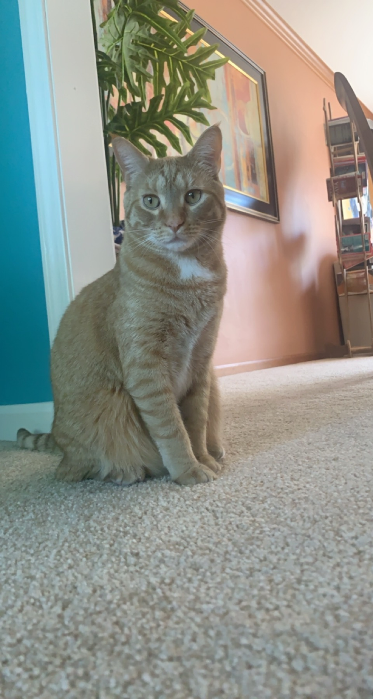

Work Experience

-
Target: 2017-current
I currently work at the popular retail chain Target. My position is being a Service Advocate. This job entails that I must assist all customers on any needs or concerns they may have. This position has further reinforced my commuinication skills and improves my social problem solving skills. I am constantly speaking to people and expressing my advice for what I think is the suitable solution to their problems.
School Life
I reside in Shelby Township, Michigan and currently in my third year of college at Oakland University. At Oakland University, I am currently in the Women in Computing club as a way to interact with other people enrolled in the engineering program at Oakland University. Schooling during the pandemic put a strain on networking with other students, so this upcoming year I hope to participate in more school oriented events to improve my school spirit.
Personal Life

 I have resided in Shelby Township in my whole 20 years of living. I am one of three siblings. My parents are Mexican immigrants and have had a huge influence on my motivation for life. They push me to do the best I can and help me strive to be my best self. My dad is a director for a European automotive company, so the inspiration of being an engineer sprouted from there. Thanks to my parents, I am fluent in spanish, which allows me to expand my networking circle. Fun fact: During the height of the Covid-19 pandemic, I adopted two kittens. The two kittens adopted ended up being an orange cat, named Empanada, and a gray cat, Chai.